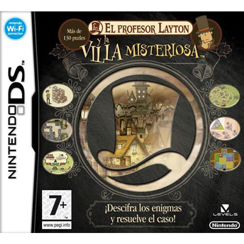
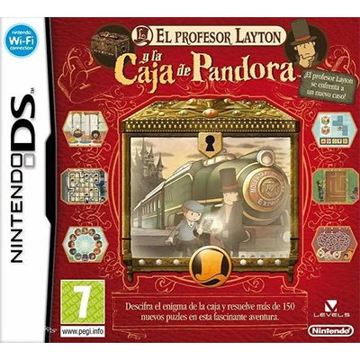
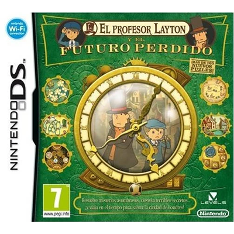
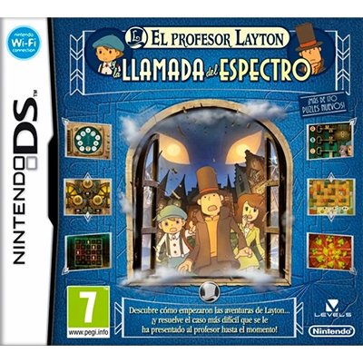
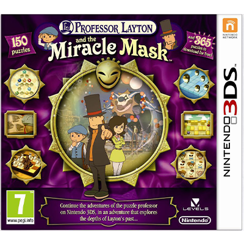
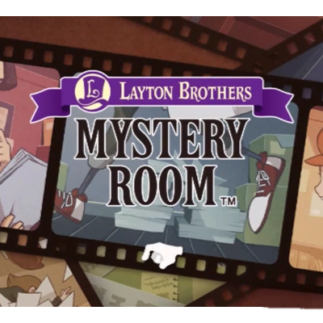
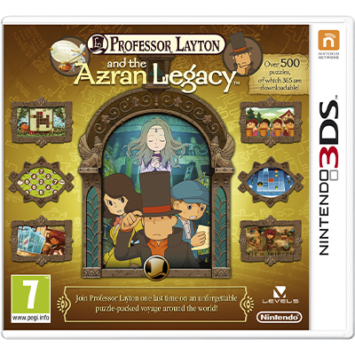
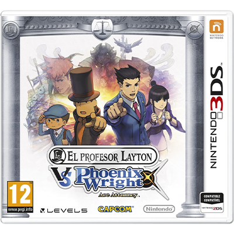
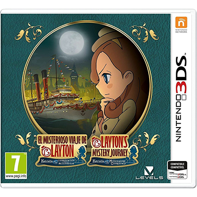

Trama: El profesor Layton junto a su joven ayudante, Luke Triton, acuden a la misión de encontrar la herencia de la manzana dorada en el pueblo de Saint-Mystère, recorriendo y afrontando los diversos puzles que todos los habitantes del pueblo les dejan a ambos personajes.
2. EL PROFESOR LAYTON Y LA CAJA DE PANDORA
Año de lanzamiento: 2009
Publicado por Level-5 y Nintendo
Trama: El profesor Layton y Luke intentarán descubrir todos los secretos que hay detrás de una enigmática caja que causa la muerte de todo aquel que la abre; para ello, los personajes tienen un largo viaje en tren donde se encuentran nuevamente con Flora y parten hacia un pueblo misterioso donde nada parece envejecer..
3. EL PROFESOR LAYTON Y EL FUTURO PERDIDO
Año de lanzamiento: 2010
Publicado por Level-5 y Nintendo
Trama: Los protagonistas son llamados por un extraño remitente que afirma ser Luke de diez años en el futuro, buscando recuperar la seguridad de un Londres sumergido en el caos por las fuerzas del mal. Así, ambos personajes deciden ir al lugar donde fueron citados para descubrir todo lo que hay detrás y ayudar al Londres del Futuro a volver a la normalidad.
4. EL PROFESOR LAYTON Y LA LLAMADA DEL ESPECTRO
Año de lanzamiento: 2011
Publicado por Level-5 y Nintendo
Trama: Esta precuela ocurre tres años antes de la Villa Misteriosa, mostrando cómo Luke y Hershel Layton se conocieron y afrontaron el misterio de un raro ser llamado el Espectro, el cual azota el pueblo de Misthallery bajo la niebla. Allí, el profesor será acompañado por su nueva asistente Emmy Altava.
5. EL PROFESOR LAYTON Y LA MÁSCARA DE LOS PRODIGIOS
Año de lanzamiento: 2012
Publicado por Level-5 y Nintendo
Trama: En el quinto juego de la saga y segunda entrega de la trilogía precuela, los personajes deben descubrir los acontecimientos que rodean la leyenda de una máscara capaz de concederle cualquier deseo a su portador, como favor por parte de una amiga a la que Hershel no ve hace 18 años. Al llegar a la ciudad Montedore, los personajes observan que un enigmático sujeto que porta la máscara convierte a los habitantes en piedra frente a sus ojos.
6. LAYTON BROTHERS: MYSTERY ROOM
Año de lanzamiento: 2013
Publicado por Level-5
Trama: Consiste en un spin-off de la saga de profesor Layton dirigida a dispositivos móviles. El juego consiste en la historia de la detective novata Lucy Baker, quien empieza a trabajar con el renombrado detective Alfendi Layton (hijo del profesor Layton) en una serie de casos resguardados en la “Cámara de los Misterios” de Scotland Yard.
7. EL PROFESOR LAYTON Y EL LEGADO DE LOS ASHALANTI
Año de lanzamiento: 2013
Publicado por Level-5 y Nintendo
Trama: El profesor, Luke y Emmy son invitados por el famoso arqueólogo Desmond Sycamore para compartir el hallazgo de una momia viviente llamada Aurora, la cual busca ser capturada por la organización Targent para explorar el origen de la antigua civilización Ashalanti (que conserva un milenario poder oculto). Así, los protagonistas deben hacer lo necesario para proteger a Aurora y obtener acceso al legado de la poderosa comunidad antigua.
8. EL PROFESOR LAYTON VS PHOENIX WRIGHT: ACE ATTORNEY
Año de lanzamiento: 2014
Publicado por Level-5 y Nintendo
Trama: Esta es una historia spin-off que combina dos sagas de videojuegos de misterio e investigación, mezclando personajes, mecánicas y ambientes narrativos en una sola historia. La trama gira en torno a una ciudad medieval nombrada Labyrinthia, donde existen brujas azotadas por el poder del villano conocido como el Narrador. Mientras Phoenix Wright busca demostrar la inocencia de una chica llamada Aria (acusada injustamente como bruja), Layton intentará destapar el misterio que hay detrás del pueblo.
9. EL MISTERIOSO VIAJE DE LAYTON: KATRIELLE Y LA CONSPIRACIÓN DE LOS MILLONARIOS
Año de lanzamiento: 2017
Publicado por Level-5 y Nintendo
Trama: la hija del aclamado profesor Layton, Katrielle, busca encontrar a su padre resolviendo diversos misterios que hay a lo largo de Londres. En su viaje, cuenta con la asistencia del estudiante de la universidad de Gressenheller Ernest Greeves y un perro parlante llamado Sherl.
10. EL PROFESOR LAYTON Y EL NUEVO MUNDO A VAPOR
Año de lanzamiento: 2026 (anunciado)
Publicado por Level-5 y Nintendo
Trama: esta entrega continúa las aventuras de Luke y el profesor Layton después de El Futuro Perdido, mostrando nuevos acontecimientos en la ciudad de Steam Bisom de Estados Unidos, la cual oculta un nuevo misterio entre toda su avanzada tecnología.
ENTREGAS
VIDEOJUEGOS POR ORDEN DE LANZAMIENTO

EL PROFESOR LAYTON Y LA VILLA MISTERIOSA

EL PROFESOR LAYTON Y LA CAJA DE PANDORA

EL PROFESOR LAYTON Y EL FUTURO PERDIDO

EL PROFESOR LAYTON Y LA LLAMADA DEL ESPECTRO

EL PROFESOR LAYTON Y LA MÁSCARA DE LOS PRODIGIOS

LAYTON BROTHERS: MYSTERY ROOM

EL PROFESOR LAYTON Y EL LEGADO DE LOS ASHALANTI

EL PROFESOR LAYTON VS PHOENIX WRIGHT: ACE ATTORNEY

EL MISTERIOSO VIAJE DE LAYTON: KATRIELLE Y LA CONSPIRACIÓN DE LOS MILLONARIOS